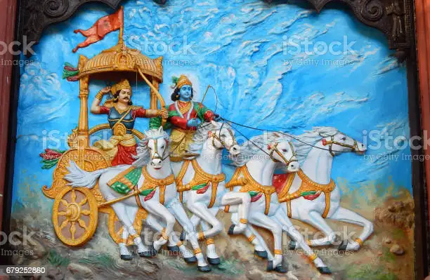
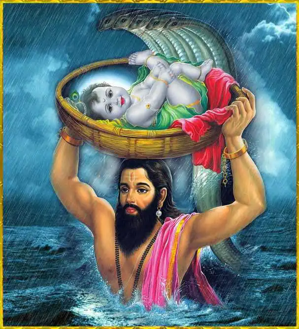
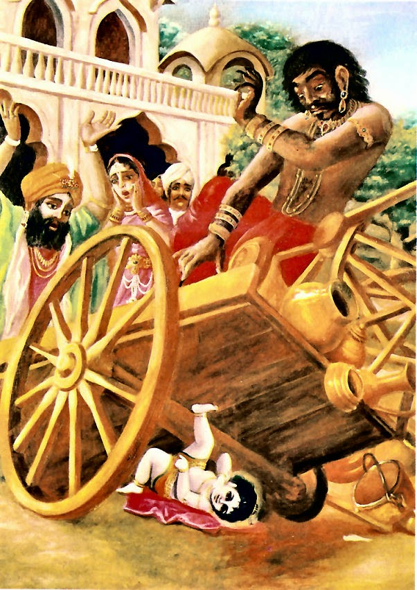
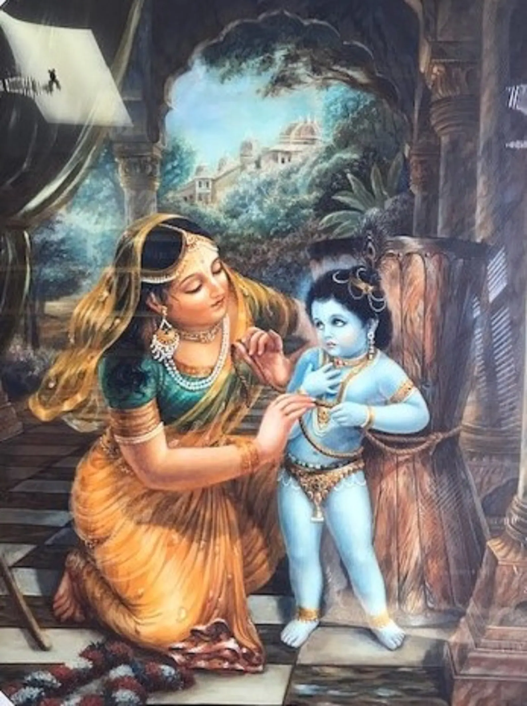

Introduction
Krishna, the meaning of the word in Sanskrit is all-attractive, He is the Supreme Personality of Godhead,
also called as God of gods. In otherwords, Krishna is the Godhead because He is all-attractive. From
practical experience we can observe that one is attractive due to (1) wealth, (2) power, (3) fame, (4)
beauty, (5) wisdom and (6) renunciation. One who is in possession of all six of these opulences at the same
time and who possesses them to an unlimited degree is understood to be the Supreme Personality of Godhead
according to Parasara Muni a great Vedic authority.
Lord Krishna appeared 5,000 years back and played his part as a human being to perfection. Within the prison
of His maternal uncle Kamsa, where His father and mother were confined, Krishna appeared outside His
mother’s body as the four-handed Vishnu – Narayana. Then He turned Himself into a baby and told His father
to carry Him to the house of Nanda Maharaja and his wife Yashoda in Gokula. The Vedic literatures give
further histories of his appearances over millions and billions of years.
Read more

Birth
During the birth of Lord Krishna, the whole atmosphere became filled with prosperity and joy. The trees were
laden with fruits and flowers.
The rivers were overflowing with water, and the lakes were beautifully decorated with lotus flowers. The
birds in the forest began to sing with sweet voices, and the peacocks began to dance. The wind blew very
pleasantly, carrying the aroma of different flowers. All the people’s minds became filled with peace and
joy.
The denizens of the heavenly planets began to sing, offer prayers and dance on the auspicious occasion. The
heavenly residents being pleased also began to shower flowers. At the seashore there was the sound of mild
waves, and above the sea there were clouds in the sky which began to thunder very pleasingly.Amidst such a
wonderful atmosphere, Lord Krishna in order to protect his devotees took birth as the eighth child of Devaki
and Vasudeva, bringing boundless joy to both of them.
The day when Lord Krishna took birth is called as Janmastami.
Read more

Putana Vadh
One day, Putana arrived from outer space in Gokula, the home of
Nanda Maharaja, and by displaying her mystic power, she assumed the
disguise of a very beautiful woman. Taking courage, she immediately
entered Krishna's bedroom without anyone's permission; by the grace of
Krishna, no one forbade her to enter the house or the room, because that
was Krishna's desire. The baby Krishna, who resembled a fire covered by
ashes, looked upon Putana and thought that
Read more
Trnavarta Vadh
When mother Yasoda was sitting with her child on her
lap, she suddenly observed that he had assumed the weight of the entire
universe. She was so astonished that she had to put the child down, and
in the meantime Trnavarta, one of the servants of Kamsa, appeared there
as a whirlwind and took the child away. The whole tract of land known as
Gokula became surcharged with dust, no one could see where the child had been taken, and all the gopis
were overwhelmed because He had
Read more

Universal form within mouth
Krishna's playmates complained to mother
Yasoda that Krishna was eating earth. Mother Yasoda wanted to open Krishna's mouth to see the evidence so that she could chastise Him. Sometimes she assumed the position of a chastising mother, and at the next
moment she was overwhelmed with maternal love. Lord Sri Krishna said, My dear mother, I have never eaten dirt.
All My friends complaining against Me are liars. If you think they
are being truthful, you can directly look into my mouth
Read more

Mother binds Krishna
One day, the maidservants being engaged in other work, mother
Yasoda was churning the yogurt into butter herself, and in the meantime
Krishna came and requested her to allow Him to suck her breast milk. Of
course, mother Yasoda immediately allowed Him to do so, but then she
saw that the hot milk on the oven was boiling over, and therefore she immediately stopped allowing Krishna to drink the milk of her breast and
went to stop the milk on the oven from overflowing.
Read more
